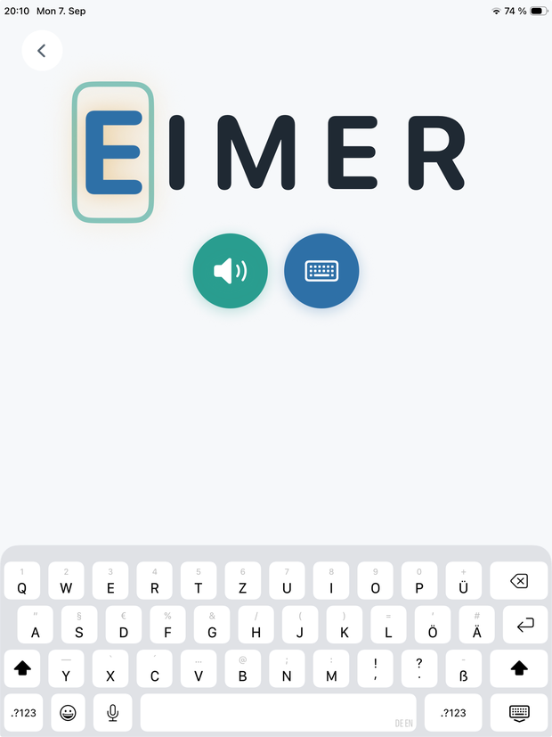
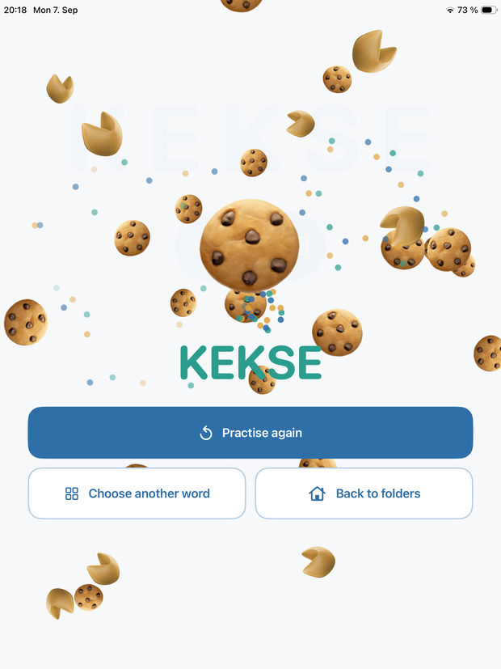
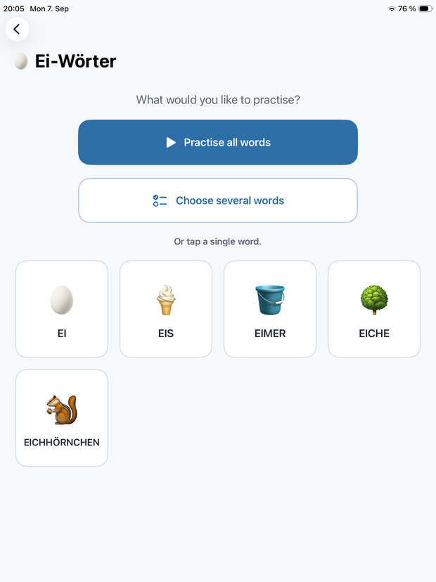
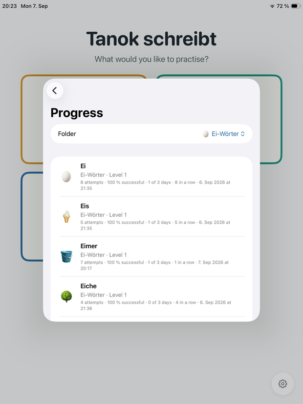

Ein Wort hören, es Buchstabe für Buchstabe tippen, am Ende ein Feuerwerk. Eine ruhige App fürs iPad, die nichts will ausser Üben.
Für iPad · Deutsch, English, Español, Français, Italiano




Die App liest ein Wort vor, das Kind tippt es. Richtiges bleibt stehen, Falsches wackelt kurz und ist wieder weg. Keine Uhr, keine Punkte, keine Gegner.
Vom pulsierenden nächsten Buchstaben bis zur reinen Stimme. Jedes Wort hat seine eigene Stufe, und acht Schalter bestimmen, was jede Stufe zeigt und sagt.
Wenn ein Wort mehrmals an verschiedenen Tagen sitzt, wird die Hilfe von selbst weniger. Wer das nicht will, stellt jede Stufe von Hand.
Ordner anlegen, Wörter mit Emoji oder eigenem Foto versehen, Sprache und Stimme je Wort wählen. Namen, Lieblingsdinge, was gerade dran ist.
Ein Wort gilt erst als sicher, wenn es an mehreren verschiedenen Tagen sass. Fünf Treffer in einer Minute sind nicht dasselbe wie fünf Treffer an fünf Tagen.
Ordner, Wörter, Bilder und der ganze Fortschritt passen in eine Datei. Beim Wechsel auf ein neues iPad geht nichts verloren.
Das ist keine Nebensache, sondern der Punkt.
Fünf eigene Wörter gratis
Die drei Startordner, alle vier Stufen, sämtliche Hilfen, der Fortschritt, Sichern und Einlesen: kostenlos. Wer mehr als fünf eigene Wörter anlegen möchte, schaltet sie mit einem einmaligen Kauf frei — kein Abonnement, mit Familienfreigabe, hinter einer Rechenaufgabe für Erwachsene.